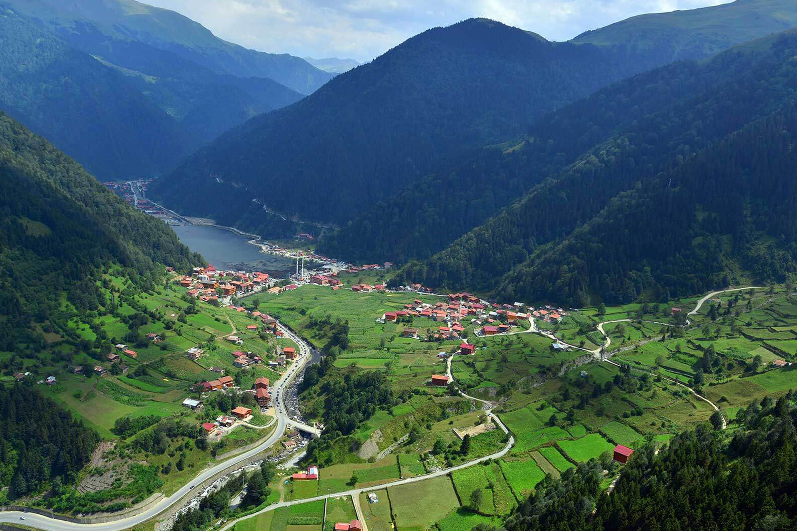

Uzungöl
» Uzungöl is located 99 km from Trabzon and 19 km from Çaykara, at an altitude of 1,090 m above sea level.
» The lake in the middle of the valley, formed when rocks falling from the slopes blocked the Haldizen stream, is known as “Uzungöl”, and the surrounding area shares its name. The traditional old wooden houses in the nearby village of Şerah complement the natural beauty.
» Attracting considerable interest from domestic and international visitors, Uzungöl has rich tourism potential. Alongside trekking, birdwatching and botanical excursions with Uzungöl İnan Kardeşler, there are opportunities to visit lakes among the higher mountains and nearby highlands such as Şekersu, Demirkapı and Yaylaönü.
» The mountains around Uzungöl are home to wildlife including bears, wolves, wild goats, foxes and Caucasian grouse. Formed when a landslide created a natural dam across the stream bed in the Haldizen Valley, the lake presents an attractive landscape with its surrounding spruce forests. The settlement of Uzungöl on the lakeshore has a municipal administration, and infrastructure work continues.
» Although the surface of the lake varies slightly with seasonal water levels, it is generally around 1,000 metres long, 500 metres wide and 15 metres deep. Trout live in the lake. The settlement is said to have a 1:2,000 implementation zoning plan prepared by the municipality. It has been observed that development is moving from traditional wooden highland houses on the grassy northwestern slopes towards concrete buildings on the lakeshore. Around the lake, the focal point of the designated Tourism Centre, the topography limits the area available for settlement.
» Consequently, the tourism settlement areas designated to the northwest lie at lower elevations. Accommodation facilities envisaged for these areas would undoubtedly make intensive use of the lake and its surroundings for day visits and Uzungöl İnan Kardeşler activities. For the Tourism Centre to develop successfully and sustainably, construction around the lake therefore needs to be kept under strict control.
» The entrance to the lake from Çaykara is already enclosed by large buildings, including a mosque and a school. Construction is increasing rapidly in the southeast. A privately built facility of wooden bungalows with a capacity of 52 beds, situated south of the lake beside the Haldizen stream, stands out as a successful example.
» The Haldizen Valley, extending southwards, has abundant natural riches. Around ten small lakes in the mountains, roughly 10–20 km from Uzungöl, add to the range of activities in the area. International groups already visit Uzungöl, stay at the existing facility and take nature walks to the lakes to the south.


{kind=link}
{kind=link}
{kind=link}
{kind=link}